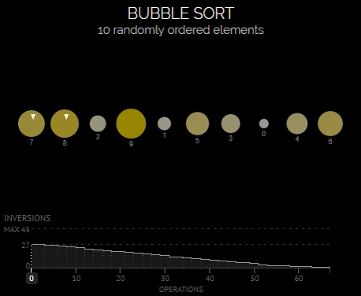

Визуализации алгоритмов сортировки
Алгоритмы сортировки упорядочивают элементы по определённому критерию. В день появления первых компьютерных вычислений появился и повод для споров между исследователями. Причиной разногласий послужил поиск эффективных способов решения не только для общих задач, но и для сложных проблем. К таким задачам и проблемам также относится тема сортировки элементов по определённому критерию.
Визуализация алгоритмов сортировки служит для того, чтобы понять, как работают одни из самых известных алгоритмов сортировки.
Сортировка вставками (Insertion sort)
Несмотря на то что этот алгоритм сортировки имеет довольно большую вычислительную сложность, он остаётся полезным, когда данные почти полностью отсортированы или размер данных не очень велик.
В алгоритме Insertion sort элементы входной последовательности просматриваются по одному, и каждый новый поступивший элемент размещается в подходящее место среди ранее упорядоченных элементов.
Временная сложность алгоритма — O(n2)

Сортировка пузырьком (Bubble sort)
Для понимания и реализации этот алгоритм — простейший, но эффективен он лишь для небольших массивов. Алгоритм считается учебным и практически не применяется вне учебной литературы, вместо него на практике применяются более эффективные алгоритмы сортировки.
В то же время метод сортировки обменами лежит в основе некоторых более совершенных алгоритмов, таких как сортировка перемешиванием, пирамидальная сортировка и быстрая сортировка.
Сортировка выбором (Selection sort)
Сортировка выбором — это некий гибрид между пузырьковой и сортировкой вставками. Как и сортировка пузырьком, этот алгоритм проходит по массиву раз за разом, перемещая одно значение на правильную позицию. Однако, в отличие от пузырьковой сортировки, он выбирает наименьшее неотсортированное значение вместо наибольшего. Как и при сортировке вставками, упорядоченная часть массива расположена в начале, в то время как в пузырьковой сортировке она находится в конце.
Сортировка Шелла (Shell Sort)
Алгоритм сортировки, являющийся усовершенствованным вариантом сортировки вставками. Идея метода Шелла состоит в сравнении элементов, стоящих не только рядом, но и на определённом расстоянии друг от друга. Иными словами — это сортировка вставками с предварительными «грубыми» проходами.
Невзирая на то, что сортировка Шелла во многих случаях медленнее, чем быстрая сортировка, она имеет ряд преимуществ:
- отсутствие потребности в памяти под стек;
- отсутствие деградации при неудачных наборах данных — быстрая сортировка легко деградирует до O(n2), что хуже, чем худшее гарантированное время для сортировки Шелла.
Сортировка слиянием (Merge sort)
Алгоритм сортировки упорядочивает списки (или другие структуры данных, доступ к элементам которых можно получать только последовательно, например — потоки) в определённом порядке. Эта сортировка — хороший пример использования принципа «разделяй и властвуй». Сначала задача разбивается на несколько подзадач меньшего размера. Затем эти задачи решаются с помощью рекурсивного вызова или непосредственно, если их размер достаточно мал. Наконец, их решения комбинируются, и получается решение исходной задачи.
Быстрая сортировка (Quick Sort)
Этот широко известный алгоритм сортировки был разработан английским информатиком Чарльзом Хоаром во время его работы в МГУ в советские годы.
Один из самых быстрых известных универсальных алгоритмов сортировки массивов: в среднем O(n log n) обменов при упорядочении n-элементов; из-за наличия ряда недостатков на практике обычно используется с некоторыми доработками.
Быстрая сортировка относится к алгоритмам «разделяй и властвуй».
Алгоритм состоит из трёх шагов:
- Выбор опорного элемента из массива.
- Перераспределение элементов в массиве таким образом, что элементы меньше опорного помещаются перед ним, а больше или равные — после.
- Рекурсивное применение первых двух шагов к двум подмассивам слева и справа от опорного элемента. Рекурсия не применяется к массиву, в котором только один или отсутствуют элементы.

Пирамидальная сортировка (Heapsort)
Heapsort — алгоритм, в основе которого лежит сравнение.
Алгоритм пирамидальной сортировки можно рассматривать как улучшенную версию алгоритма сортировки выбором: он делит входные данные на отсортированную и несортированную области, а затем последовательно уменьшает несортированную область, извлекая самый большой элемент и перемещая его в сортированную область. Улучшение состоит в том, что используется бинарная куча, а не алгоритм линейного поиска, чтобы найти наибольшее значение.
Пирамидальная сортировка является одним из методов, быстродействие которых оценивается как O(n log n).
Какова общая длина всех кабелей?
По состоянию на 2017 год общая длина всех действующих кабелей составляет около 1,1 миллиона километров.
Некоторые кабели очень короткие: кабель компании CeltixConnect, соединяющий Ирландию и Великобританию, протянут всего на 131 километр. Другие же кабели могут быть невероятно длинными, например, кабель Asia America Gateway, длина которого составляет 20 000 километров.